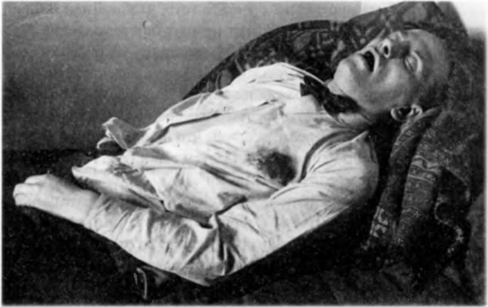

Смерть Маяковского
14 апреля 1930 года в Москве в квартире 12 дома № 3 по Лубянскому проезду было найдено тело Владимира Маяковского. Поэт покончил жизнь самоубийством.
Фортунатов пересказывает, что писала Полонская: «Он запер двери, спрятал ключ в карман и стал требовать, чтобы я не ходила в театр и вообще ушла оттуда. Плакал. Я спросила, не проводит ли он меня. Нет, сказал он, но обещал позвонить. Еще спросил, есть ли у меня деньги на такси. Денег у меня не было. Он дал 20 рублей. Я успела дойти до парадной двери и услышала выстрел. Я бросилась к нему, я повторяла «Что вы сделали?». Он попытался приподнять голову, потом голова упала, и он стал страшно бледнеть. Появились люди. Мне кто-то сказал бежать и встречать карету скорой помощи. Выбежала, встретила, вернулась, а на лестнице мне кто-то говорит: «Поздно, умер».
